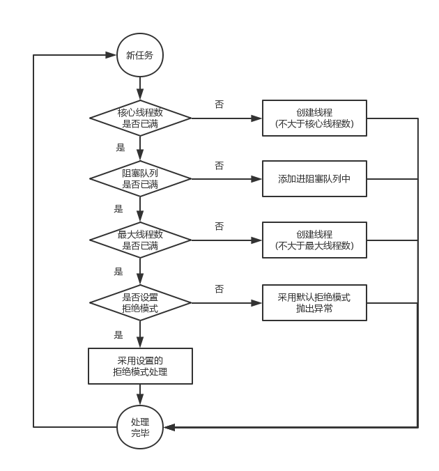
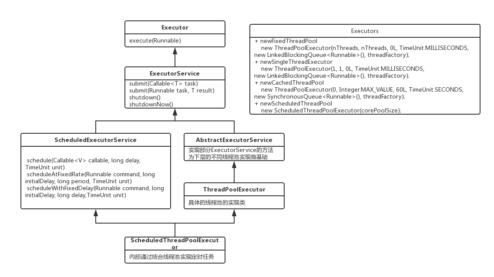

对于不同任务的线程池设计方案
池化技术的应用很广泛，比如线程池、连接池等。在业务有需要的地方建池，将宝贵的资源重复利用，从而提升效率和性能。ThreadPoolExecutor是JAVA提供的一种线程池技术，通过使用它，我们可以很方便的建立线程池。
线程池处理模式

线程池类结构

定时任务
ScheduledExecutorService中有三个方法用来进行不同类型的定时任务处理：
- schedule : 在给定的延迟时间(delay)后执行任务
- scheduleAtFixedRate : 在给定的延迟时间后执行任务。并从开始执行任务时算起，经过间隔时间后再次循环的执行此任务
- scheduleWithFixedDelay : 在给定的延迟时间后执行任务。并从执行完毕任务时算起，经过间隔时间后再次循环的执行此任务
任务提交
我们可以使用execute提交的任务，但是execute方法没有返回值，所以无法判断任务知否被线程池执行成功。通过以下代码可知execute方法输入的任务是一个Runnable类的实例。
我们也可以使用submit方法来提交任务，它会返回一个future,那么我们可以通过这个future来判断任务是否执行成功，通过future的get方法来获取返回值，get方法会阻塞住直到任务完成，而使用get(long timeout, TimeUnit unit)方法则会阻塞一段时间后立即返回，这时有可能任务没有执行完。
任务关闭
我们可以通过调用线程池的shutdown或shutdownNow方法来关闭线程池，但是它们的实现原理不同，shutdown的原理是只是将线程池的状态设置成SHUTDOWN状态，然后中断所有没有正在执行任务的线程。shutdownNow的原理是遍历线程池中的工作线程，然后逐个调用线程的interrupt方法来中断线程，所以无法响应中断的任务可能永远无法终止。shutdownNow会首先将线程池的状态设置成STOP，然后尝试停止所有的正在执行或暂停任务的线程，并返回等待执行任务的列表。
只要调用了这两个关闭方法的其中一个，isShutdown方法就会返回true。当所有的任务都已关闭后,才表示线程池关闭成功，这时调用isTerminaed方法会返回true。至于我们应该调用哪一种方法来关闭线程池，应该由提交到线程池的任务特性决定，通常调用shutdown来关闭线程池，如果任务不一定要执行完，则可以调用shutdownNow。
对于不同的任务如何使用线程池
要想合理的配置线程池，就必须首先分析任务特性，可以从以下几个角度来进行分析：
- 任务的性质：CPU密集型任务，IO密集型任务和混合型任务。
- 任务的优先级：高，中和低
- 任务的执行时间：长，中和短
- 任务的依赖性：是否依赖其他系统资源，如数据库连接
不同任务性质
任务性质不同的任务可以用不同规模的线程池分开处理。CPU密集型任务配置尽可能少的线程数量，如配置Ncpu+1个线程的线程池。IO密集型任务则由于需要等待IO操作，线程并不是一直在执行任务，则配置尽可能多的线程，如2*Ncpu。混合型的任务，如果可以拆分，则将其拆分成一个CPU密集型任务和一个IO密集型任务，只要这两个任务执行的时间相差不是太大，那么分解后执行的吞吐率要高于串行执行的吞吐率，如果这两个任务执行时间相差太大，则没必要进行分解。我们可以通过Runtime.getRuntime().availableProcessors()方法获得当前设备的CPU个数。
不同优先级
优先级不同的任务可以使用优先级队列PriorityBlockingQueue来处理。它可以让优先级高的任务先得到执行，需要注意的是如果一直有优先级高的任务提交到队列里，那么优先级低的任务可能永远不能执行。执行时间不同的任务可以交给不同规模的线程池来处理，或者也可以使用优先级队列，让执行时间短的任务先执行。依赖数据库连接池的任务，因为线程提交SQL后需要等待数据库返回结果，如果等待的时间越长CPU空闲时间就越长，那么线程数应该设置越大，这样才能更好的利用CPU。
队列应该选择有界还是无界？
建议使用有界队列，有界队列能增加系统的稳定性和预警能力，可以根据需要设大一点，比如几千。有一次我们组使用的后台任务线程池的队列和线程池全满了，不断的抛出抛弃任务的异常，通过排查发现是数据库出现了问题，导致执行SQL变得非常缓慢，因为后台任务线程池里的任务全是需要向数据库查询和插入数据的，所以导致线程池里的工作线程全部阻塞住，任务积压在线程池里。如果当时我们设置成无界队列，线程池的队列就会越来越多，有可能会撑满内存，导致整个系统不可用，而不只是后台任务出现问题。当然我们的系统所有的任务是用的单独的服务器部署的，而我们使用不同规模的线程池跑不同类型的任务，但是出现这样问题时也会影响到其他任务。
ThreadPoolExecutor核心参数
1 | new ThreadPoolExecutor(corePoolSize, maximumPoolSize, keepAliveTime, |
- corePoolSize : 线程池中核心线程数，开始的时候线程池不会创建线程，每当有新任务的时候，会创建一个线程即使有空闲的线程能够使用。等到执行的任务大于线程池的大小就不会创建了。
- maximumPoolSize : 最多线程数，如果队列满了就会继续创建线程达到这个数字为止。
- keepAliveTime : 线程在空闲状态下的存在时间。如果工作量很大，而且都是短连接，可以将这个数值设置的大一些，节省资源。
- milliseconds : 时间单位。
- runnableTaskQueue : 阻塞队列，存放当前没有执行，等待执行的任务,有以下几种队列模型：
- ArrayBlockingQueue：是一个基于数组结构的有界阻塞队列，此队列按 FIFO（先进先出）原则对元素进行排序。
- LinkedBlockingQueue：一个基于链表结构的阻塞队列，此队列按FIFO （先进先出） 排序元素，吞吐量通常要高于ArrayBlockingQueue。静态工厂方法Executors.newFixedThreadPool()使用了这个队列。
- SynchronousQueue：一个不存储元素的阻塞队列。每个插入操作必须等到另一个线程调用移除操作，否则插入操作一直处于阻塞状态，吞吐量通常要高于LinkedBlockingQueue，静态工厂方法Executors.newCachedThreadPool使用了这个队列。
- PriorityBlockingQueue：一个具有优先级的无限阻塞队列。
threadFactory : 用于设置创建线程的工厂，可以通过线程工厂给每个创建出来的线程设置更有意义的名字，Debug和定位问题时非常又帮助。
- handler : 拒绝模式、饱和策略。当队列和线程池都满了，说明线程池处于饱和状态，那么必须采取一种策略处理提交的新任务。这个策略默认情况下是AbortPolicy，表示无法处理新任务时抛出异常。以下是JDK1.5提供的四种策略。
- AbortPolicy：直接抛出异常。
- CallerRunsPolicy：只用调用者所在线程来运行任务。重复调用，直到成功加入队列。
- DiscardOldestPolicy：丢弃队列里最近的一个任务，并执行当前任务。
- DiscardPolicy：不处理，丢弃掉。
BlockingQueue
阻塞队列和普通队列很相似，不同点在于，此队列的出队和入队在头尾有同步控制，确保多线程的操作是安全的。
1 | public interface BlockingQueue<E> extends Queue<E> { |
由上面的公共接口可见，最主要的方法在于put和take，这两个方法会以阻塞的方式进行操作。下面我们用ArrayBlockingQueue做例子，其中使用了一个ReentrantLock和两个Condition，在是否为空的时候做判断，如果不满足条件则挂起释放当前锁，直到另外一个方式被调用，解锁条件为止。ArrayBlockingQueue中仅使用一个ReentrantLock，会导致入队和出队可能会出现阻塞的情况，在LinkedBlockingQueue中使用两个lock提高效率。
1 | final ReentrantLock lock; |